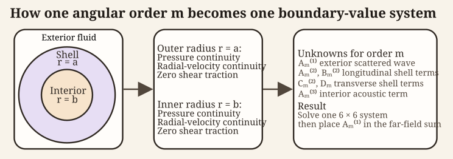

Elastic-shelled sphere modal series (ESSMS) theory
Source:vignettes/essms/essms-theory.Rmd
essms-theory.RmdIntroduction
An elastic shell supports longitudinal (\ell) and transverse (\tau) waves and encloses a fluid interior. Its response therefore couples two elastic wave types across two fluid-solid interfaces. The formulation below follows the modal treatment of Goodman and Stern (1962) and the scattering conventions developed by Stanton (1990).
At each interface, normal traction and normal velocity are continuous. The fluid exerts no shear traction, while the shell carries both normal and shear stress. These six scalar conditions determine the exterior scattered field, the four elastic-potential amplitudes, and the interior acoustic field.
Symbols and medium indices follow the Notation and symbols page. The physical interface conditions are developed in Boundary conditions.
Elastic-shelled sphere theory
The solution expands the coupled fluid and solid fields in spherical modes. Spherical symmetry makes every governing Helmholtz equation separable and allows each angular order to be solved independently.
Notation and geometry
The shell is centered at the origin with inner radius b and outer radius a. The shell thickness is therefore:
\Delta = a - b.
Points are represented by spherical coordinates \mathbf{x}=(r,\theta,\varphi). Medium 1 is the exterior fluid, medium 2 is the elastic shell, and medium 3 is the interior fluid. The shell has Lamé parameters \lambda_2 and \mu_2, density \rho_2, and wave speeds c_\ell and c_\tau. Density and sound-speed ratios are:
g_{ij} = \frac{\rho_i}{\rho_j}, \qquad h_{ij} = \frac{c_i}{c_j},
where i and j identify media. The two interfaces are exterior-shell at r=a and shell-interior at r=b.

The six scalar conditions arise because pressure and radial velocity are continuous at both radii, while shear traction vanishes at both fluid-solid interfaces.
Required boundary conditions and reduction to Helmholtz equations
Inviscid, compressible fluids satisfy the linearized Euler and continuity equations, which combine with the equation of state to yield a scalar wave equation for pressure. The same steps apply in both the exterior and interior, with their respective material properties:
\rho \frac{\partial \mathbf{v}}{\partial t} = -\nabla p, \quad \frac{\partial \rho^\prime}{\partial t} + \rho \nabla \cdot \mathbf{v} = 0,
where p is acoustic pressure and \mathbf{v}(\mathbf{x},t) is particle velocity. With the e^{-i\omega t} convention, their phasors satisfy:
\mathbf{v} = \frac{1}{i \omega \rho} \nabla p.
No rigid or pressure-release condition is prescribed at either shell surface. The coupled interface conditions instead constrain solutions of the Helmholtz equation: \nabla^2 p + k^2p = 0.
Consequently, the exterior pressure p_1 and interior pressure p_3 satisfy:
\nabla^2 p_1 + k_1^2p_1 = 0, \quad \nabla^2 p_3 + k_3^2p_3 = 0.
The shell displacement, \mathbf{u}, satisfies the Navier equation, which describes elastic motion in an isotropic, homogeneous medium. This is the starting point for introducing longitudinal and transverse wave potentials:
(\lambda + 2\mu)\,\nabla(\nabla\cdot\mathbf{u}) - \mu\,\nabla\times(\nabla\times\mathbf{u}) + \rho_s \omega^2 \mathbf{u} = 0,
where \lambda and \mu are the Lamé elastic constants and \rho_2 is the mass density of the shell. Applying the Helmholtz decomposition, \mathbf{u} is written as:
\mathbf{u} = \nabla\phi + \nabla\times\mathbf{\Psi},
which separates the elastic displacement into a compressional/longitudinal (\phi) and shear/transverse (\mathbf{\Psi}) potential. Substituting these quantities yields two independent Helmholtz equations:
\nabla^2 \phi + k_\ell^2 \phi = 0, \quad \nabla^2 \mathbf{\Psi} + k_\tau^2 \mathbf{\Psi} = 0,
where k_\ell and k_\tau are the longitudinal and transverse wavenumbers, respectively. The associated wave speeds are given by:
c_\ell = \sqrt{\frac{\lambda + 2\mu}{\rho_2}}, \quad c_\tau = \sqrt{\frac{\mu}{\rho_2}}.
Separability of the Helmholtz equation in spherical coordinates
For axisymmetric excitation, all acoustic and elastic fields are independent of the azimuthal coordinate \varphi. Each scalar potential in the problem satisfies a Helmholtz equation of the form:
\nabla^2 \psi + k^2 \psi = 0,
with the appropriate wavenumber for the surrounding fluid or for the longitudinal or transverse waves within the shell. Owing to the spherical geometry, these equations are separable in spherical coordinates, and solutions may be written as products of radial and angular functions.
As in the solid sphere case, the angular dependence is described by Legendre polynomials P_m(\cos\theta), while the radial dependence is captured by spherical Bessel or Hankel functions. Consequently, each field admits an expansion of the form:
\psi(r,\theta) = \sum_{m=0}^\infty R_m(r)\,P_m(\cos\theta).
Different angular orders are independent because the Legendre polynomials are orthogonal:
\int\limits_{-1}^{1} P_m(\mu) P_n(\mu)\,d\mu = \frac{2}{2m+1}\,\delta_{mn}.
This decoupling follows from spherical symmetry, not from a thin-shell approximation. Shell thickness and elastic coupling enter the radial functions and the coefficient matrix for each m.
Modal expansions of the acoustic and elastic fields
Because the angular functions P_m(\cos\theta) are orthogonal, the boundary conditions at the shell interfaces r=a and r=b decouple by angular order. Each angular mode m therefore yields an independent system of equations. This allows all acoustic and elastic fields to be expanded in spherical eigenfunctions with mode-dependent coefficients.
Incident and scattered fields
In both the exterior and interior fluid regions, the medium is assumed to be inviscid, homogeneous, and initially at rest. Under these assumptions the acoustic particle motion is irrotational, and a scalar velocity potential \phi(\mathbf{x},t) exists such that:
\mathbf{v} = \nabla \phi .
The acoustic pressure is related to the velocity potential by the linearized momentum equation:
p = -\rho\,\frac{\partial \phi}{\partial t}.
For time-harmonic fields with e^{-i\omega t} dependence, the pressure can be further expressed as (Morse and Ingard 1968):
p = i\omega\rho\,\phi.
The velocity potential makes normal-velocity continuity direct, while pressure follows from p=i\omega\rho\phi.
In each fluid region, the velocity potential satisfies the Helmholtz equation:
\nabla^2 \phi + k^2 \phi = 0.
Separate velocity potentials are introduced for the incident plane wave and fluid regions:
\begin{aligned} \phi_\text{inc}(r, \theta) &= e^{ik_1 r\cos\theta} \\ &= \sum\limits_{m=0}^\infty i^m(2m+1)\,j_m(k_1 r)\,P_m(\cos\theta), \\ \phi_1(\theta,r) &= \sum\limits_{m=0}^\infty i^m(2m+1) b_m\,h_m^{(1)}(k_1 r)\,P_m(\cos\theta), \\ \phi_3(\theta,r) &= \sum\limits_{m=0}^\infty i^m(2m+1) q_m\,j_m(k_3 r)\,P_m(\cos\theta), \end{aligned}
where b_m and q_m are the exterior scattered-field and interior-field amplitudes. The known incident field supplies the forcing at r=a.
Shell potentials
Within the elastic shell (b<r<a), the displacement requires both an irrotational longitudinal potential and a solenoidal transverse potential.
Because the shell occupies an annular region and does not include the origin, both independent radial solutions of the Helmholtz equation are admissible. The longitudinal and transverse potentials are therefore expanded as:
\phi_2(r,\theta) = \sum_{m=0}^{\infty} \left[ A_m j_m(k_\ell r) + B_m y_m(k_\ell r) \right] P_m(\cos\theta), \qquad \Psi(r,\theta) = \sum_{m=0}^{\infty} \left[ C_m j_m(k_\tau r) + D_m y_m(k_\tau r) \right] P_m(\cos\theta).
where A_m and B_m are the unknown longitudinal elastic coefficients and C_m and D_m are the unknown transverse elastic coefficients for each angular order m. Each set of coefficients represents the contribution of angular order m to the total displacement field.
Both j_m and y_m are admissible because the shell excludes the origin. Their combination represents elastic waves reflected between the two interfaces. The potentials generate displacement and stress, which couple the four elastic coefficients to the two fluid fields.
Displacement components
Using an axisymmetric vector potential \boldsymbol{\Psi}, the shell displacement is:
\mathbf{u} = \nabla \phi_2 + \nabla \times \boldsymbol{\Psi}.
The transverse-potential normalization can be chosen so that the separated radial functions \phi_m and \psi_m give the displacement components:
For each angular mode m, the radial and tangential displacement components in the shell are:
\begin{aligned} u_r &= \sum_{m=0}^{\infty} \left[ \frac{d\phi_m}{dr} + \frac{m(m+1)}{r} \psi_m \right] P_m(\cos\theta), \\ u_\theta &= \sum_{m=0}^{\infty} \left[ \frac{\phi_m}{r} + \frac{d}{dr}(r\psi_m) \right] \frac{dP_m(\cos\theta)}{d\theta}, \end{aligned}
where \phi_m(r) and \psi_m(r) denote the radial parts of \phi_2 and \Psi for mode m, respectively. These expressions allow the stress and velocity boundary conditions at r=a and r=b to be written as linear combinations of the modal coefficients.
Elastic constitutive relations and tractions
The elastic shell is modeled as a homogeneous, isotropic, linearly elastic solid. Its mechanical response is described by the Cauchy stress tensor \boldsymbol{\sigma}, which relates stress to displacement through Hooke’s law for isotropic media.
In spherical geometry with axisymmetric motion, only the radial and polar displacement components (u_r, u_\theta) are nonzero. As a result, only two traction components act on spherical interfaces: the normal (radial) stress \sigma_{rr} and the shear stress \sigma_{r\theta}. These components enter directly into the boundary conditions at the shell-fluid interfaces.
Stress displacement relations
For an isotropic, homogeneous elastic solid, the Cauchy stress tensor is related to the displacement field \mathbf{u} by:
\sigma_{ij} = \lambda\,\delta_{ij}\,\nabla\cdot\mathbf{u} + 2\mu\,\varepsilon_{ij}, \quad \varepsilon_{ij} = \frac{1}{2} \left( \frac{\partial u_i}{\partial x_j} + \frac{\partial u_j}{\partial x_i} \right)
where \mathbf{u} is the displacement vector, \varepsilon_{ij} is the infinitesimal strain tensor, and \delta_{ij} is the Kronecker delta. These relations encode both volumetric deformation through \nabla\cdot\mathbf{u} and shear deformation through the symmetric strain components.
For a spherically layered geometry with axisymmetric motion, only the radial and polar displacement components (u_r, u_\theta) are nonzero. Consequently, only two traction components enter the boundary conditions: the normal stress \sigma_{rr} and the shear stress \sigma_{r\theta} acting on spherical surfaces. In spherical coordinates, these stress components are:
\begin{aligned} \sigma_{rr} &= (\lambda + 2\mu)\frac{\partial u_r}{\partial r} + \lambda \left( \frac{2u_r}{r} + \frac{1}{r}\frac{\partial u_\theta}{\partial\theta} + \frac{u_\theta\cot\theta}{r} \right), \\ \sigma_{r\theta} &= \mu \left( \frac{1}{r}\frac{\partial u_r}{\partial\theta} + \frac{\partial u_\theta}{\partial r} - \frac{u_\theta}{r} \right). \end{aligned}
The normal stress \sigma_{rr} represents the radial traction exerted by the shell on the surrounding fluid or interior medium, while \sigma_{r\theta} represents tangential (shear) traction along the spherical interface. Because fluids cannot sustain shear stress, \sigma_{r\theta} must vanish at any fluid-solid boundary.
Substituting the modal displacement expressions derived above into these relations causes all angular dependence to factor into P_m(\cos\theta) or its derivative. By orthogonality of the Legendre polynomials, each angular order remains uncoupled, and the stresses may be written in modal form as:
\begin{aligned} \sigma_{rr}^{(m)}(r,\theta) &= \Sigma_{rr}^{(m)}(r)\,P_m(\cos\theta), \\ \sigma_{r\theta}^{(m)}(r,\theta) &= \Sigma_{r\theta}^{(m)}(r)\, \frac{dP_m(\cos\theta)}{d\theta}, \end{aligned}
where \Sigma_{rr}^{(m)}(r) and \Sigma_{r\theta}^{(m)}(r) are radial functions that depend linearly on the modal coefficients (A_m, B_m, C_m, D_m) and their radial derivatives. Evaluating these expressions at r=a and r=b provides the traction terms required for the shell boundary conditions. Because inviscid fluids cannot sustain shear stress, \sigma_{r\theta} vanishes at both shell interfaces. Together with continuity of normal stress and normal velocity, these relations close the elastic field equations and link the shell potentials to the acoustic fields.
Boundary conditions
The shell occupies b<r<a. Projecting the interface conditions onto P_m(\cos\theta) produces six equations for every m>0: normal traction, normal velocity, and zero shear traction at each radius. Each equation is a linear combination of spherical Bessel functions and their derivatives.
The coordinate vector \mathbf e_r points toward increasing r, but the outward normal of the shell is \mathbf e_r at r=a and -\mathbf e_r at r=b. The coordinate-free condition \boldsymbol\sigma\mathbf n=-p\mathbf n avoids ambiguity. Scalar matrix rows may differ in sign when a source uses a compression-positive normal stress.
Exterior interface r=a
At the shell-exterior interface, traction and normal velocity satisfy:
\boldsymbol\sigma_2\mathbf n = -p_1\mathbf n, \quad \frac{1}{i\omega\rho_1}\frac{\partial p_1}{\partial r} = -i\omega u_r, \quad \sigma_{r\theta} = 0
with all evaluated at r=a.
Interior interface r=b
At the shell-interior interface, the corresponding conditions are:
\boldsymbol\sigma_2\mathbf n = -p_3\mathbf n, \quad \frac{1}{i\omega\rho_3}\frac{\partial p_3}{\partial r} = -i\omega u_r, \quad \sigma_{r\theta} = 0
with all evaluated at r=b.
Boundary matrix construction
For each m>0, the six boundary conditions become six linear equations. Let b_m denote the exterior scattering coefficient, let (L_m^{(j)},T_m^{(j)},L_m^{(y)},T_m^{(y)}) denote the shell coefficients, and let q_m denote the interior-fluid coefficient. The unknown vector is:
\mathbf{x}_m = [\ b_m,\ L_m^{(j)},\ T_m^{(j)},\ L_m^{(y)},\ T_m^{(y)},\ q_m\ ]^T.
This system may also be written in matrix-form:
\mathbf{M}_m\,\mathbf{x}_m = \mathbf{F}_m
Each row of \mathbf{M}_m corresponds to a boundary condition:
\normalsize \begin{array}{r} \text{Exterior pressure continuity at } r = a \Longrightarrow \\ \text{Exterior radial-velocity continuity at } r = a \Longrightarrow \\ \text{Exterior shear traction condition } \sigma_{r\theta}(a) = 0 \Longrightarrow \\ \text{Interior pressure continuity at } r = b \Longrightarrow \\ \text{Interior radial-velocity continuity at } r = b \Longrightarrow \\ \text{Interior shear traction condition } \sigma_{r\theta}(b) = 0 \Longrightarrow \\ \end{array} \begin{bmatrix} \alpha_{11} & \alpha_{12} & \alpha_{13} & \alpha_{14} & \alpha_{15} & 0 \\ \alpha_{21} & \alpha_{22} & \alpha_{23} & \alpha_{24} & \alpha_{25} & 0 \\ 0 & \alpha_{32} & \alpha_{33} & \alpha_{34} & \alpha_{35} & 0 \\ 0 & \alpha_{42} & \alpha_{43} & \alpha_{44} & \alpha_{45} & \alpha_{46} \\ 0 & \alpha_{52} & \alpha_{53} & \alpha_{54} & \alpha_{55} & \alpha_{56} \\ 0 & \alpha_{62} & \alpha_{63} & \alpha_{64} & \alpha_{65} & 0 \end{bmatrix} \mathbf{x}_m = \begin{bmatrix} a_1 \\ a_2 \\ 0 \\ 0 \\ 0 \\ 0 \end{bmatrix}
The forcing terms a_1 and a_2 arise from the incident pressure and its radial derivative evaluated at the outer interface r=a, while the \alpha_{ij} entries arise from the shell potentials and the interior fluid field. Each \alpha_{ij} is a known scalar function of m, radius (a or b), the different acoustic wavenumbers, and the relevant density ratios.
To make the construction explicit, the exterior pressure and radial-velocity conditions produce the first two forcing terms and the first-column entries of the matrix:
a_1 = \frac{\rho_1}{\rho_2} j_m(k_1 a), \quad \alpha_{11} = \frac{\rho_1}{\rho_2} h_m^{(1)}(k_1 a), \qquad a_2 = k_1 a\, j_m'(k_1 a), \quad \alpha_{21} = k_1 a\, h_m^{(1)'}(k_1 a),
where primes denote derivatives with respect to the argument. Similarly, the interior pressure and radial-velocity conditions contribute entries such as:
\alpha_{46} = \frac{\rho_3}{\rho_2} j_m(k_3 b), \quad \alpha_{56} = k_3 b\, j_m'(k_3 b).
The remaining \alpha_{ij} terms are obtained by substituting the modal expressions for u_r and u_\theta into \sigma_{rr} and \sigma_{r\theta}, then evaluating at r=a and r=b. Explicit expressions for all \alpha_{ij} are given in Goodman and Stern (1962) with some modifications described in Stanton (1990).
Solving for b_m
For each angular order, the first unknown is the exterior scattering coefficient. Cramer’s rule gives, for m>0:
b_m = \frac{ \det(\mathbf{M}_m^{(1)}) }{ \det(\mathbf{M}_m) }, \qquad m>0.
The determinant ratio is built from:
\frac{\det(\mathbf{M}_m^{(1)})}{\det(\mathbf{M}_m)} = \frac{ \begin{bmatrix} a_1 & \alpha_{12} & \alpha_{13} & \alpha_{14} & \alpha_{15} & 0 \\ a_2 & \alpha_{22} & \alpha_{23} & \alpha_{24} & \alpha_{25} & 0 \\ 0 & \alpha_{32} & \alpha_{33} & \alpha_{34} & \alpha_{35} & 0 \\ 0 & \alpha_{42} & \alpha_{43} & \alpha_{44} & \alpha_{45} & \alpha_{46} \\ 0 & \alpha_{52} & \alpha_{53} & \alpha_{54} & \alpha_{55} & \alpha_{56} \\ 0 & \alpha_{62} & \alpha_{63} & \alpha_{64} & \alpha_{65} & 0 \end{bmatrix} }{ \begin{bmatrix} \alpha_{11} & \alpha_{12} & \alpha_{13} & \alpha_{14} & \alpha_{15} & 0 \\ \alpha_{21} & \alpha_{22} & \alpha_{23} & \alpha_{24} & \alpha_{25} & 0 \\ 0 & \alpha_{32} & \alpha_{33} & \alpha_{34} & \alpha_{35} & 0 \\ 0 & \alpha_{42} & \alpha_{43} & \alpha_{44} & \alpha_{45} & \alpha_{46} \\ 0 & \alpha_{52} & \alpha_{53} & \alpha_{54} & \alpha_{55} & \alpha_{56} \\ 0 & \alpha_{62} & \alpha_{63} & \alpha_{64} & \alpha_{65} & 0 \end{bmatrix} }.
Matrix notation
\mathbf{M}_m^{(1)} is obtained by replacing the first column of \mathbf{M}_m with the forcing vector. No additional physical coefficient is introduced.
At m=0, tangential motion vanishes and the transverse columns and shear rows drop out. The resulting coefficient is:
b_0 = \frac{ \det(\widehat{\mathbf{M}}_m^{(1)}) }{ \det(\widehat{\mathbf{M}}_m) }, \qquad m=0.
The reduced determinant ratio is built from:
\frac{\det(\widehat{\mathbf{M}}_m^{(1)})} {\det(\widehat{\mathbf{M}}_m)} = \frac{ \begin{bmatrix} a_1 & \alpha_{12} & \alpha_{14} & 0 \\ a_2 & \alpha_{22} & \alpha_{24} & 0 \\ 0 & \alpha_{42} & \alpha_{44} & \alpha_{46} \\ 0 & \alpha_{52} & \alpha_{54} & \alpha_{56} \end{bmatrix} }{ \begin{bmatrix} \alpha_{11} & \alpha_{12} & \alpha_{14} & 0 \\ \alpha_{21} & \alpha_{22} & \alpha_{24} & 0 \\ 0 & \alpha_{42} & \alpha_{44} & \alpha_{46} \\ 0 & \alpha_{52} & \alpha_{54} & \alpha_{56} \end{bmatrix} }.
Far-field backscatter
The incident plane wave is expanded in spherical Bessel functions and Legendre polynomials:
p_{\mathrm{inc}}(r,\theta) = P_0 e^{i k_1 r \cos\theta} = P_0\sum_{m=0}^{\infty} (2m+1) i^m j_m(k_1 r) P_m(\cos\theta).
The spherical Bessel function of the first kind, j_m, is incorporated because the incident wave must be finite at the origin.
The scattered field is written as the sum of partial waves using outgoing spherical Hankel functions to enforce the Sommerfeld radiation condition (Sommerfeld 1949):
p_{\mathrm{scat}}(r,\theta) = P_0 \sum_{m=0}^{\infty} (2m+1)i^m b_m h_m^{(1)}(k_1 r) P_m(\cos\theta).
When summed together, the total exterior pressure field becomes:
p_1 = p_{\mathrm{inc}} + p_{\mathrm{scat}} = P_0 \sum_{m=0}^\infty (2m + 1) i^m P_m(\cos\theta) \left[ j_m(k_1r) + b_m h_m^{(1)}(k_1r) \right].
In the far-field limit, k_1 r \gg 1, the spherical Hankel function satisfies:
h_m^{(1)}(k_1 r) \sim \frac{(-i)^{m+1} e^{i k_1 r}}{k_1 r}.
Substituting this asymptotic form into the scattered-field expansion modifies p_\text{scat} to:
p_\text{scat}(r, \theta) \sim -\frac{iP_0 e^{i k_1 r}}{k_1 r} \sum\limits_{m=0}^\infty (2m + 1)b_m P_m(\cos\theta).
The far-field form function, \mathcal{f}(\theta), is defined as the factor that relates the incident pressure amplitude to the scattered pressure at k_1 r \gg 1, normalized to remove the spherical spreading (\frac{1}{r}) and phase change (e^{i k_1 r}):
p_\text{scat}(r, \theta) \sim P_0 \frac{e^{i k_1 r}}{r} \mathcal{f}(\theta).
Consequently, the dimensional far-field amplitude is:
\mathcal{f}(\theta) = -\frac{i}{k_1} \sum\limits_{m=0}^\infty (2m + 1)b_m P_m(\cos\theta).
The phase cancellation that produces the factor -i is:
i^m(-i)^{m+1} =(-i)(i\,{-i})^m =-i.
In the backscattering direction where \theta = \pi, the Legendre polynomials simplify to:
P_m(\cos \theta) = P_m(-1) = (-1)^m.
This gives the final linear scattering coefficient:
\mathcal{f}_\text{bs} = -\frac{i}{k_1} \sum_{m=0}^{\infty} (2m+1)b_m(-1)^m.
The backscattering cross-section and target strength are then (MacLennan et al. 2002):
\sigma_\text{bs} = |\mathcal{f}_\text{bs}|^2, \quad TS = 10\log_{10}\left(\frac{\sigma_\text{bs}}{1\ \mathrm{m}^2}\right).
Limiting cases and validation
The solution provides several useful limits. Increasing shell stiffness suppresses radial motion and approaches a fixed-rigid boundary. If the shear modulus tends to zero while the remaining properties are adjusted consistently, the response approaches an acoustic layered sphere. Thin shells make guided circumferential motion more prominent (Stanton 1990). These limits test matrix assembly, density ratios, and wavenumber bookkeeping.
Circumferential (Lamb-type) waves and shell thickness
The ESSMS formulation does not add Lamb waves as separate terms. Circumferential or guided-wave behavior is already contained in the coupled longitudinal and transverse potentials. These waves appear as resonances in b_m and as narrow features in \mathcal{f}_\text{bs}.
Thickness controls the spacing and strength of these branches. Useful nondimensional measures are \widetilde\Delta=(a-b)/a, k_\ell(a-b), and k_\tau(a-b). In the thin-shell limit, the circumferential families are related to the symmetric and antisymmetric Lamb modes of a flat plate. Thicker shells admit more through-thickness structure and shift the modal resonances.
The matrices encode this dependence through k_\ell a, k_\ell b, k_\tau a, k_\tau b, and the traction terms coupling radial and tangential motion. No separate phenomenological correction is required.